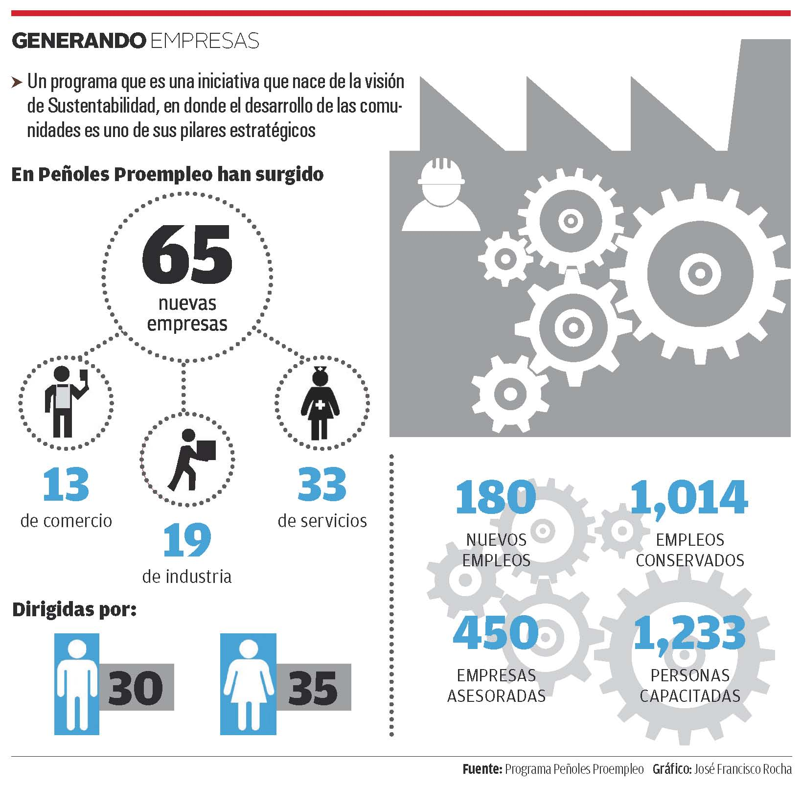

Historias como la de Jaciel de Lara, un joven que con tan sólo 25 años va por su tercera empresa de reciclado de distintos materiales, o de Guadalupe Elena Macías, que salió de vender joyería a sus amigas desde su casa, para formar una empresa con diez socios, demuestran que la cultura del emprendimiento está creciendo fuerte en la Comarca Lagunera.
El programa Peñoles Proempleo ha cumplido diez años capacitando a más de 1,200 personas con ideas de negocio con el Taller Emprende, con el cual se han cristalizado 65 nuevas empresas que han generado 180 nuevos empleos.
También se ha asesorado a 450 empresas, logrando la permanencia de 1,014 fuentes de trabajo, además se ha impartido el Curso de Computación a 350 personas.
Rafael Rebollar, director de Metales Químicos de Industriales Peñoles, dio a conocer que este Programa es una iniciativa que "nace de nuestra Visión de Sustentabilidad, en donde el desarrollo de las comunidades donde operamos es uno de sus pilares estratégicos".
"Esta vocación la traemos desde las minas, cuando una mina opera en una comunidad cerrada toda la población depende de ella y hace muchos años decidimos fomentar proyectos que promovieran el auto desarrollo de las comunidades. De tal forma que la gente pudiera tener una actividad económica independientemente de la mina."
Ese concepto comenzó en Torreón en 2010. "La metodología que siguen consiste en desarrollar un plan de negocios que les permita a las personas que ya tienen una idea de negocio, darles orden, dirección, claridad y la estrategia para que puedan ser triunfadores", explicó.
Con esto se logra alentar a las personas con una nueva idea de negocio o con una empresa ya formada, pero no profesionalizada, agregó el responsable del Programa Peñoles Proempleo, Andrés Núñez:
"Puede tratarse desde amas de casa que desean llevar un complemento a su hogar, personas jubiladas, o personas con un empleo pero con deseos de poner un negocio y otro de los segmentos son los jóvenes".
“Sin esta ayuda, yo seguiría en mi casa vendiendo mis joyitas”
Guadalupe Macías, socia del negocio de plata “Portal 925”
Impulsando a los jóvenes
Se dio a conocer que de cada tres personas que llegan a Peñoles Proempleo, dos son mujeres y alrededor de 20% son jóvenes.
"Hay una cultura muy marcada de que un joven primero tiene que ser contratado antes de generar su propia empresa, a los jóvenes les damos prácticas para identificar quienes tienen el perfil.
Muchos son licenciados con carrera y van a aprender a desaprender, les enseñamos su potencial, si realmente tienen una vocación empresarial, que conozcan el mercado, vemos la parte de finanzas, generación de utilidades y la parte de venta".
Uno de los casos exitosos, es el del joven Jaciel de Lara. "Él llegó al programa estando en quinto semestre de carrera, nosotros lo adoptamos, para que fuera ganando concursos de manera interna, hasta llevarlo a un concurso nacional".
"Ahorita ya tiene una recicladora de PET, nos acaba de anunciar que tiene una recicladora de madera, y va a generar una tercera empresa con tan solo 25 años".
Andrés Núñez compartió que uno de los grandes retos de las empresas que llegan a Peñoles Proempleo es mantenerse, porque hay alto índice de mortalidad.
"Casi 99% de las personas que se han acercado, han permanecido, nosotros queremos seguir acompañándolos, alentándolos a través de simuladores de ventas de negocios, para que de una manera divertida la gente obtenga información empresarial".
Añadió que el mayor problema que tienen los empresarios es la administración, "poder encontrar un equilibrio entre el recurso humano, el material, el dinero, saber qué fortalezas tiene el negocio, a veces el empresario no tiene esa habilidad para conocerlas y a la competencia".
Una de las empresarias cuyo proyecto se concretó con el apoyo de este programa es Guadalupe Elena Macías, diseñadora de joyería de plata, quien formó junto con diez socios el negocio "Portal .925"
"Somos diez socios egresados del Tecnológico de Monterrey, los diez estábamos haciendo joyería en nuestras casas, entramos al taller de Peñoles, invitamos a más socios y abrimos la tienda, nos dieron el empujón y fue realidad en septiembre".
"Es algo que yo no tenía contemplado, pensaba que estaba bien en mi casa vendiendo a mis amigas, creí que eso era lo que me tocaba. Sin esta ayuda, yo seguiría en mi casa vendiendo mis joyitas", expresó.
“Peñoles Proempleo sigue una metodología para hacer un plan de negocios que le permita a las personas que ya tienen una idea de negocio, darles orden, dirección, claridad y la estrategia para que puedan ser triunfadores”
Rafael Rebollar, Peñoles.
Infografía

En Peñoles ProEmpleo han surgido
- 65 nuevas empresas
- 33 de servicios
- 19 de industria
- 13 de comercio.
- Son dirigidas 35 de ellas por mujeres y 30 por hombres
Hay un total de:
- 180 nuevos empleos
- 450 empresas asesoradas
- 1,014 empleos conservados
- 1,233 personas capacitadas
Fuente: Programa Peñoles Proempleo.